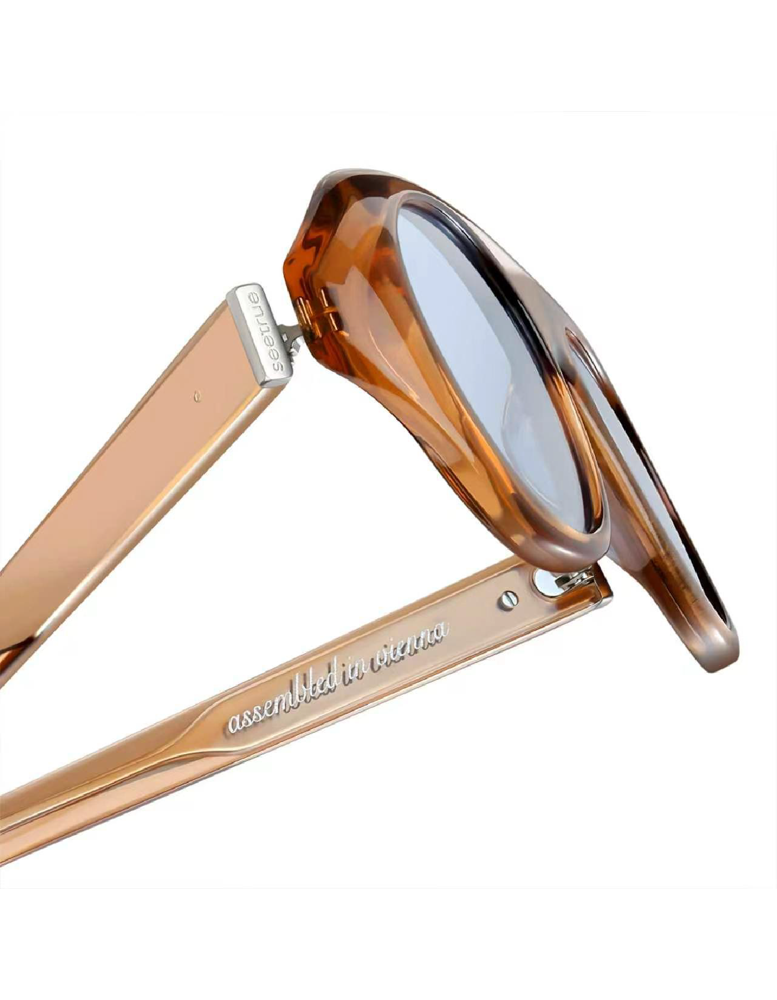
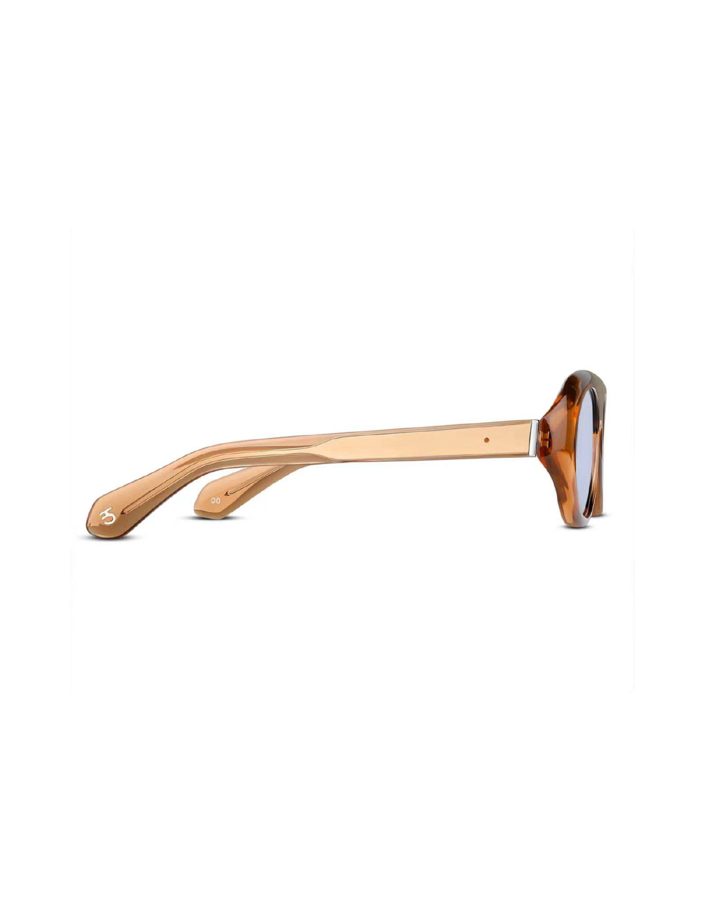
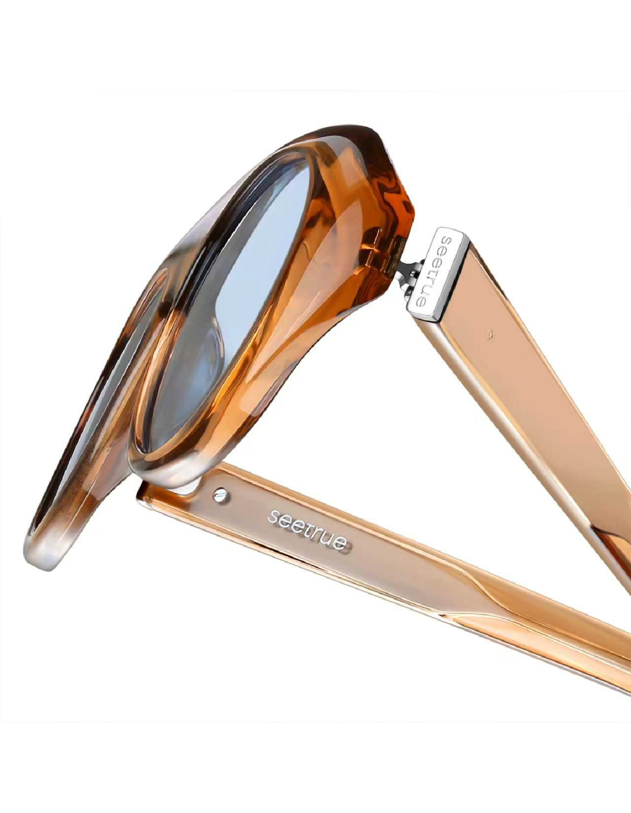
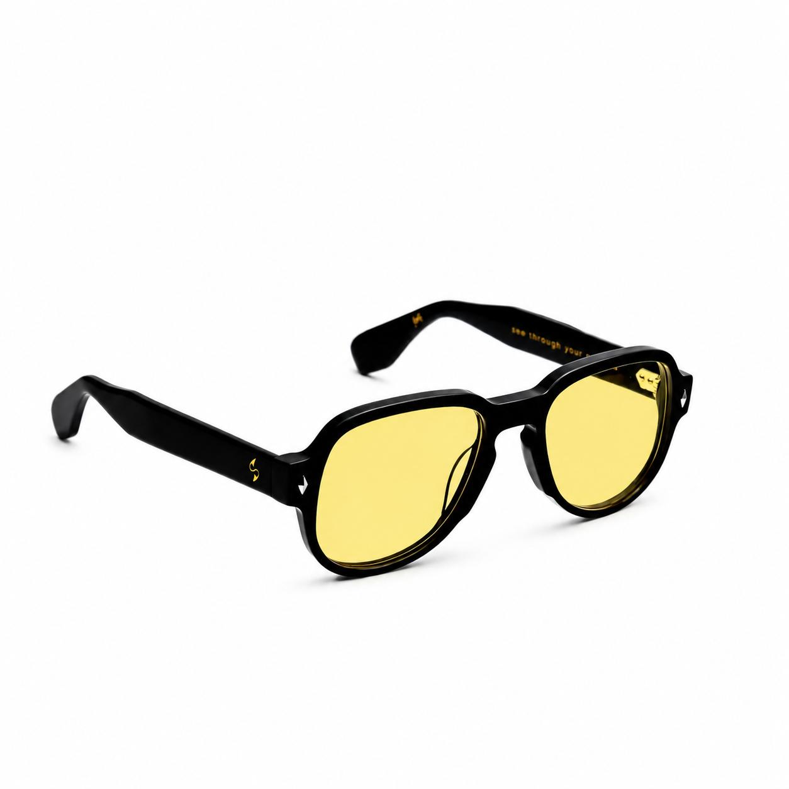
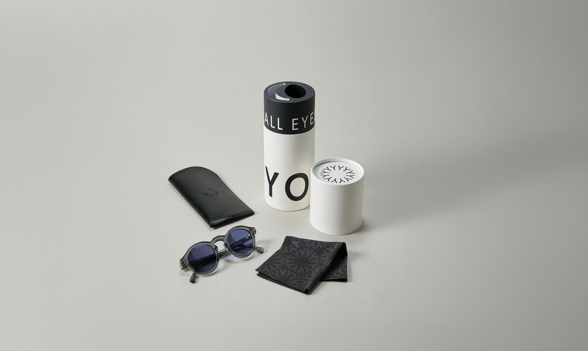

made to last.
every pair of seetrue glasses is built to outlive trends, seasons, and the idea that quality is something you replace. this is how we make them.
the frames
italian acetate,
shaped by hand.
our frames begin as thick slabs of premium acetate, sourced from a single family workshop outside bologna. each block is cut slowly to preserve the material's internal structure — the thing that keeps its colour true for decades, not seasons. what takes a machine twenty minutes, we finish by hand in six hours. the difference is something you feel before you see it.
the lenses
clarity is not a default.
it is a decision.
each lens is ground to prescription tolerances, even in our non-rx models. full uv400 protection, anti-reflective coating applied in three separate passes, and mineral glass in select editions. when you hold them to light, you should see nothing but clarity. we check this by hand, every pair, before anything is fitted into the frame.
the hinges
built like a
watch movement.
the hinge is where most glasses fail. ours are machined from solid stainless steel and set into the acetate with threaded barrel inserts — not glued, not pressed. they open flat without resistance and stay in position without spring tension. two parts. one joint. no flex, no rattle, no play. in ten years they will feel exactly as they do today.
the details

rim
each corner is filed by hand to exactly the radius in the original drawing. the machine only suggests the shape.

hinge
stainless steel, set into threaded inserts. it will outlast the frame it holds, and the frame is built to last a lifetime.

temple
flat on the inside, curved outside. designed to sit without pressure and disappear the moment it's on your face.

nose bridge
the geometry here sets how the frame sits on your face. we adjusted this bridge width eleven times before settling on the final number.

end piece
the first thing that wears on cheaper frames. ours is set, not pressed — solid where cheaper glasses compromise first.

lens
held to light before fitting. rejected if there is any distortion, any. we do not fit lenses we would not wear ourselves.
the process

01 — material sourcing
the acetate arrives in numbered batches.
italian zyl acetate from mazzucchelli, varese. each slab is logged by colour lot, thickness, and cure date before it enters the workshop. nothing reaches the machine without being cleared by hand.
scroll to continue

02 — cnc cutting
the machine removes the bulk. that's all.
a cnc router traces the frame shape from the acetate block in a single pass — twenty minutes to get roughly right. offcuts go back into the material loop. nothing is wasted.

03 — hand filing
now a person takes over. the machine is done.
temples, rims, bridge — one surface at a time. each brought to tolerance by someone who knows what it feels like. six hours of hand work for what the machine started in twenty minutes.
04 — wet sanding
six grits. coarse down to near-invisible.
wet sanding through six progressively finer grits — most of a working day, and it cannot be rushed. hurry this step and the surface will remember it ten years later.
05 — barrel polishing
three stages, twelve hours — you cannot rush this.
wood chips, cotton scraps, and polishing compound. the barrel rotates across three stages until the surface holds light exactly as it should — warm, deep, with no plastic sheen.
06 — hinge & lens fitting
the hinge and lens — both fitted by hand.
the seven-barrel hinge is set and checked for resistance, play, and alignment. lenses are edged to each rim and fitted with heat, not glue. a correctly seated lens clicks in without play.

07 — final inspection
worn by a person. judged on feel first.
inspected under magnification for surface marks, alignment, and optical clarity — then worn. feel first, vision second, fit third. only then does it receive a serial number and a place in the box.

what comes with your pair
hover to explore
your pair, numbered and inspected. the last thing added before the box is sealed.
boiled wool from northern austria. woven, not printed. cleans without scratching on day one or day three hundred.
full-grain vegetable-tanned leather. saddle-stitched, no lining, no zipper. it ages into something more beautiful than new.
1.2mm uncoated board, printed in a single pass. no gloss, no embossing. designed to be kept, not thrown away.
eight pages, uncoated stock. plus a handwritten thank you card signed at the bench where your pair was finished.
hover the dots to explore each item